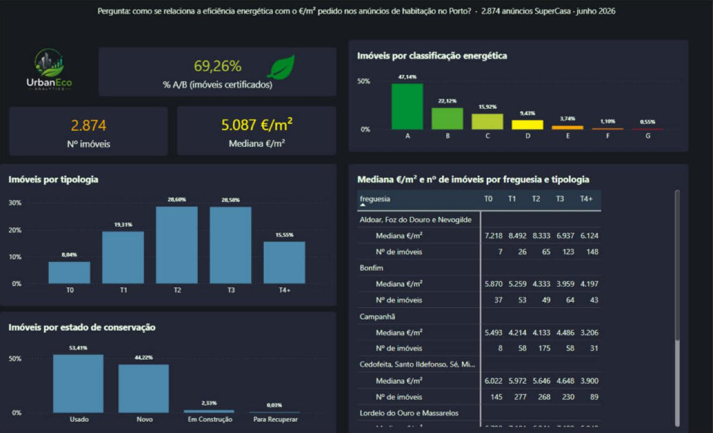

Eficiência energética e preço da habitação no Porto
Como se relaciona a eficiência energética com o €/m² pedido nos anúncios de habitação no Porto? Projeto final de grupo da Pós-Graduação em Big Data & Decision Making (ISEP, 2026).

Resultados
A localização pesa mais do que a classe
A mediana do €/m² vai de 4.180 em Campanhã a 6.950 em Aldoar, Foz do Douro e Nevogilde.
Sem segmentar, a classe quase não distingue preços
Nos T0, T1 e T2, a classe A fica abaixo da B: a comparação direta mistura localização, tipologia e estado.
No mesmo segmento, A/B pede mais por m²
Na mesma freguesia e tipologia, a diferença mediana é de +766 €/m². Só nos usados: 18 de 19 segmentos, +1.183 €/m².
A amostra está enviesada
91% da obra nova certificada é A/B, contra 50% dos usados.
Preços pedidos, não preços de venda. Os resultados mostram associação, não causalidade.
Pipeline
| Etapa | Anúncios |
|---|---|
| Recolha final (21–22/06/2026) | 2.805 |
| Depois da limpeza em Python (29 fora de 500–25.000 €/m²; 0 duplicados) | 2.776 |
| Base do grupo usada pelo dashboard (21–26/06/2026) | 2.874 |
Revisão do dashboard (outubro 2026)
| Problema | Correção |
|---|---|
| O card do prémio verde somava todos os segmentos (14.772 €/m²) | Média dos segmentos com ≥ 20 anúncios: B → A = 338 €/m² |
| O EVI dava nota 0 a anúncios sem certificado ou sem mediana de segmento | EVI em branco quando falta uma componente (média 57,90 → 59,46) |
| "Melhor freguesia" escolhida por ordem alfabética | Passou a usar a freguesia com ranking 1 |
| Rankings de serviços invertidos | Pontuação = 8 − posição |
| Filtros escondidos e KPIs com médias | Filtros documentados; KPIs passam a usar a mediana |
Fórmulas: medidas DAX · metodologia e limitações
Autoria
Projeto final de grupo, Pós-Graduação em Big Data & Decision Making, ISEP, 2026.
A minha contribuição:
- Recolha dos dados (scraping SuperCasa com Python/Selenium).
- Limpeza e cálculo do EVI em Python.
- Base PostgreSQL local em Docker.
- Documentação do projeto.
- Revisão do dashboard em outubro de 2026.
As medidas DAX originais e a base PostgreSQL na Aiven foram desenvolvidas pelo grupo.